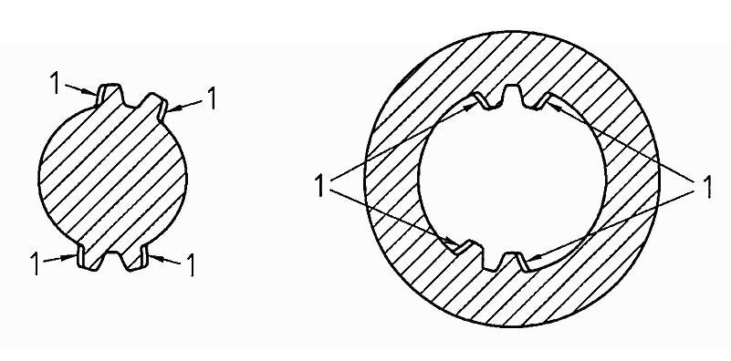

|
|
|


量规
花键连接通常用量规进行检验。
通规 总是全齿形的（齿环绕整个圆周），用于检验 作用 公差极限。对于轮毂，这是 最小作用 齿槽宽；对于轴，这是 最大作用 齿厚。
止规 总是按扇形分布齿（取决于试件齿数，2 到 7 个齿彼此相对布置），用于检验 实际 公差极限。对于轮毂，这是 最大实际 齿槽宽；对于轴，这是 最小实际 齿厚。每个扇形外侧的齿面留有足够的间隙（齿面让刀，见图中的 1），因为它们无法被精确测量。

图 38.5：显示量规
KISSsoft 可以计算 ISO 4156 和 DIN 5480-15 中详述的所有量规公差。为此，请选择 ，然后点击 选项。系统不会自动计算符合 ANSI 的齿廓的量规尺寸。
DIN 5480-15 仅限于 30° 的压力角。压力角 37.5° 和 45° 在 ISO 4156 中定义。DIN 5480-15 具有模数范围 0.5 到 10 mm 的数据，并且样件上最大齿数为 100。对于超过 DIN 5480-15 数据的值，报告中不提供任何信息。
根据 DIN 5480-15，如果测量滚柱与规定尺寸不完全匹配，则应为测量滚柱输入一个计算出的 公差系数 AF1。然后，以公差系数 AF1 为乘算系数，对两个测量滚柱尺寸偏差的平均值进行换算。这样就可以确定跨滚柱距离的公差。由于该值未知，KISSsoft 中不执行此计算。
Gauges
Spline connections are often checked using gauges.
Go gauges are always fully toothed (teeth all around the perimeter) and are used to test the effective tolerance limit. For hubs, this is the min. effective tooth space and for shafts this is the max. effective tooth thickness.
No-go gauges are always toothed by sector (depending on the number of teeth on the test piece, 2 to 7 teeth located opposite each other) and are used to test the actual tolerance limit. For hubs, this is the max. actual tooth space and for shafts, this is the min. actual tooth thickness. The externally located flanks of each sector are given sufficient clearance (flank relief, see 1 in the Figure), as they cannot be measured exactly.
Figure 38.5: Displaying gauges
KISSsoft can calculate all the gauge allowances detailed in ISO 4156 and DIN 5480-15. To do this, select to and then click on the option. The system does not automatically calculate the gauge dimensions for profiles that comply with ANSI.
DIN 5480-15 is limited to a pressure angle of 30°. Pressure angles 37.5° and 45° are defined in ISO 4156. DIN 5480-15 has data for a module range of 0.5 to 10 mm and a maximum number of 100 teeth on the sample. No information is provided in the report for values that exceed the data in DIN 5480-15.
According to DIN 5480-15, a calculated allowance coefficient AF1 should be entered for the measuring rollers, if the measuring rollers do not exactly match the specified dimension. Then, the distance AF1 is calculated as a multiplication coefficient of the mean value of the allowances for the two measuring rollers. This enables the tolerance for the distance over rollers to be determined. As this value is not known, this calculation is not performed in KISSsoft.